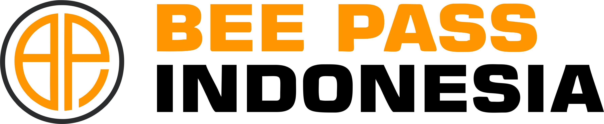

About Us

PT BEE PASS INDONESIA adalah perusahaan yang bergerak di bidang jasa konstruksi, pengadaan dan pembebasan lahan, serta perencanaan proyek. Kami berkomitmen menghadirkan solusi bangunan berkualitas tinggi yang mengutamakan inovasi, profesionalisme, dan keberlanjutan.
Dengan fokus pada kepuasan pelanggan, kami mendukung berbagai proyek mulai dari infrastruktur hingga bangunan komersial. Bee Pass Indonesia siap membangun masa depan yang lebih kuat dan berdaya saing.
Layanan Kami
- Pengadaan & Pembebasan Lahan: Proses kompleks yang melibatkan banyak pihak.
- Perencanaan Proyek: Perencanaan, desain, dan pengelolaan proyek konstruksi.
- Pembangunan Konstruksi: Termasuk pembangunan, renovasi, dan pemeliharaan bangunan.
- Pengukuran: Menjamin semua elemen proyek sesuai dengan standar dan hukum.
- Cut and Fill: Teknik pemotongan dan penimbunan tanah untuk perataan lahan.
- Construction Building: Mulai dari tahap awal hingga penyelesaian bangunan.
Nilai Utama Kami
- Keahlian dan Pengalaman Teruji
- Solusi Inovatif dan Berkelanjutan
- Komitmen pada Kualitas dan Ketepatan Waktu
PT BEE PASS INDONESIA telah BERSERTIFIKAT RESMI dan siap menjadi mitra terpercaya dalam setiap proyek Anda.